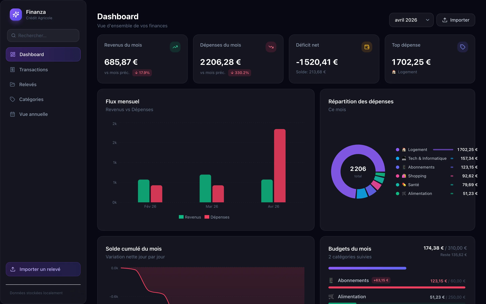
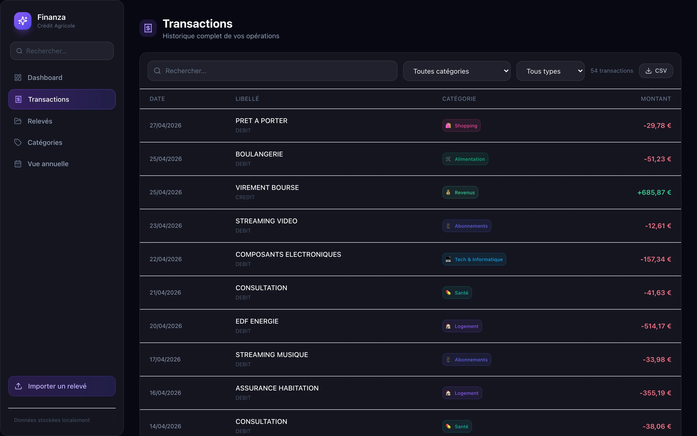
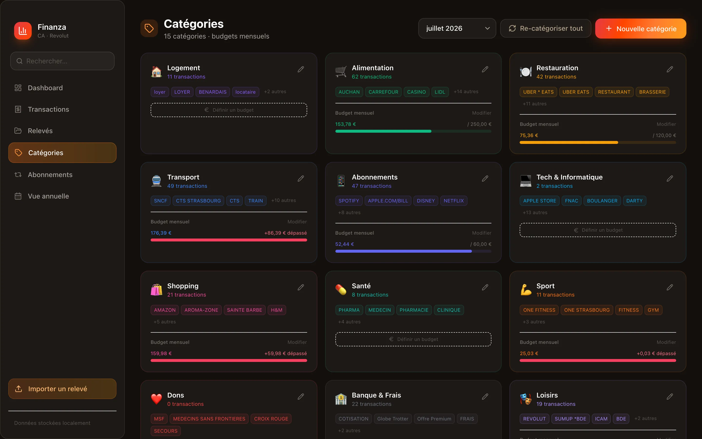
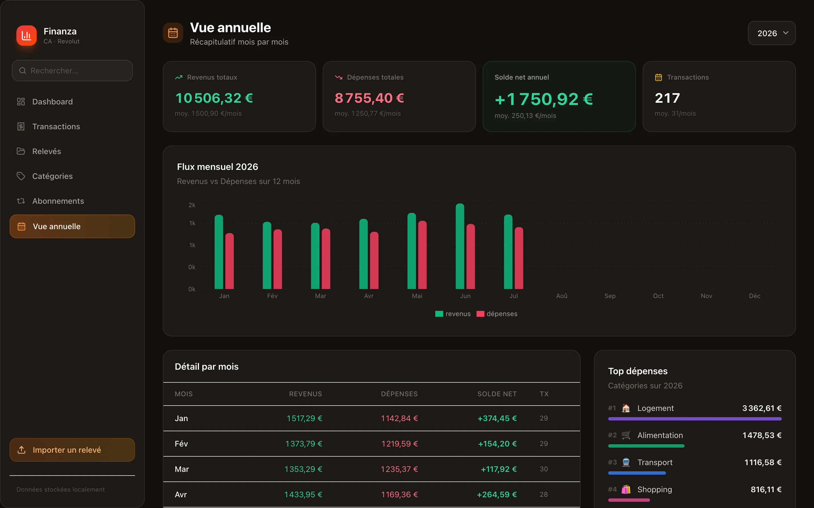

Finanza
Finanza — une application web personnelle qui transforme des relevés bancaires CSV (Crédit Agricole) en tableaux de bord clairs : dépenses par catégorie, évolution du solde, budgets. Entièrement développée en autonomie, et surtout 100 % locale : aucune donnée financière ne quitte la machine.


Les applications de gestion de budget existantes demandent souvent de connecter son compte bancaire à un service tiers. Je voulais l'inverse : un outil où mes données restent chez moi. Finanza lit simplement les fichiers CSV exportés depuis la banque, en local.

Un parser CSV maison gère le format Crédit Agricole (encodage ISO-8859-1, lignes multiples) et dé-doublonne les opérations via un hash SHA-256. Chaque transaction est ensuite catégorisée automatiquement par mots-clés, avec ajustement manuel possible et suivi de budgets mensuels.

Côté affichage, des graphiques Recharts : flux mensuel revenus/dépenses, solde cumulé jour par jour, répartition des dépenses, comparaison avec le mois précédent et vue annuelle. L'objectif : comprendre ses finances d'un coup d'œil.
Tout tourne sur localhost, les données sont stockées dans une base SQLite locale via Prisma — aucun serveur distant, aucun tiers. Le projet m'a permis de monter en compétence sur la stack Next.js / TypeScript / Tailwind tout en gardant la maîtrise totale de données sensibles.